| Up | Next | Prev | PrevTail | Tail |
Author: Thomas Sturm
Consider the field F = ℚ(x1,…,xn) of rational functions and a set Δ = {∂x1,…, ∂xn} of commuting derivations acting on F . That is, for all ∂xi, ∂xj ∈ Δ and all f, g ∈ F the following properties are satisfied:
Consider now the set F[∂x1,…,∂xn], where the derivations are used as variables. This set forms a non-commutative linear partial differential operator ring with pointwise addition, and multiplication defined as follows: For f ∈ F and ∂xi, ∂xj ∈ Δ we have for any g ∈ F that
Here “ ⋅ ” denotes the multiplication in F . From (16.90) and (16.88) it follows that ∂xi∂xj = ∂xj∂xi, and using (16.89) and (16.87) the following commutator can be proved:A linear partial differential operator (LPDO) of order k is an element
 ∂x
njn.
∂x
njn.
A factorization of D is a non-trivial decomposition
For the purpose of factorization it is helpful to temporarily consider as regular commutative polynomials certain summands of the LPDO under consideration. Consider a commutative polynomial ring over F in new indeterminates y1, …, yn. Adopting the notational conventions above, for m ≤ k the symbol of D of order m is defined as
There is a unary operator partial(⋅) denoting ∂.
| 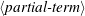 | → | partial ( 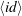 ) | |
There is a binary operator *** for the non-commutative multiplication involving partials ∂x. All expressions involving *** are implicitly transformed into LPDOs, i.e., into the following normal form:
| 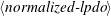 | → |  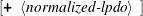 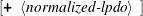 | |
| 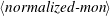 | → | 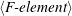 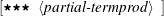 | |
| 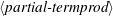 | → |  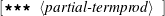 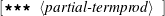 | |
The summands of the normalized-lpdo are ordered in some canonical way. As an example consider
Here the F-elements are polynomials, where the unknowns are of the type constant-operator denoting functions from F :
| 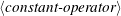 | → |  ( ) ( ) | |
We do not admit division of such constant operators since we cannot exclude that such a constant operator denotes 0.
The operator notation on the one hand emphasizes the fact that the denoted elements are functions. On the other hand it distinguishes a() from the variable a of a rational function, which specifically denotes the corresponding projection. Consider e.g.
Here we use as F-elements specific elements from F = ℚ(x,y).
In our example with constant operators, the transformation into normal form introduces a formal derivative operation diff(⋅,⋅,⋅), which cannot be evaluated. Notice that we do not use the Reduce operator df(⋅,⋅,⋅) here, which for technical reasons cannot smoothly handle our constant operators.
In our second example with rational functions as F-elements, derivative occurring with commutation can be computed such that diff does not occur in the output.
Besides the generic computations with constant operators, we provide a mechanism to globally fix a certain shape for F-elements and to expand constant operators according to that shape.
We give an example for a shape that fixes all constant operators to denote generic bivariate affine linear functions:
Notice that the placeholder # must be escaped with !, which is a general convention for Rlisp/Reduce. Notice that lpdoset returns the old shape and that {-1} denotes the default state that there is no shape selected.
The command lpdoweyl {n,x1,x2,...} creates a shape for generic polynomials of total degree n in variables x1, x2, ….
The order of an lpdo:
Returns the list of derivations (partials) occurring in its argument LPDO d.
That is the smallest set {…,∂xi,…} such that d is defined in F[…,∂xi,…]. Notice that formal derivatives are not derivations in that sense.
Given a starting symbol a, a list of variables l, and a degree n, lpdogp(a,l,n) generates a generic (commutative) polynomial of degree n in variables l with coefficients generated from the starting symbol a:
Given a starting symbol a, a list of variables l, and a degree n, lpdogp(a,l,n) generates a generic differential polynomial of degree n in variables l with coefficients generated from the starting symbol a:
The symbol of an lpdo. That is the differential monomial of highest order with the partials replaced by corresponding commutative variables:
More generally, one can use a second optional arguments to specify a the order of a different differential monomial to form the symbol of:
Finally, a third optional argument can be used to specify an alternative starting symbol for the commutative variable, which is y by default. Altogether, the optional arguments default like lpdosym(⋅)=lpdosym(⋅,lpdoord(⋅),y).
This converts a symbol obtained via lpdosym back into an LPDO resulting in the corresponding differential monomial of the original LPDO.
In analogy to lpdosym there is an optional argument for specifying an alternative starting symbol for the commutative variable, which is y by default.
Given LPDOs p, q and m ∈ ℕ the function lpdos(p,q,m) computes the commutative polynomial
Factorize the argument LPDO d. The ground field F must be fixed via lpdoset. The result is a list of lists {…,(Ai,Li),…}. Ai is is genrally the identifiers true, which indicates reducibility. The respective Li is a list of two differential polynomial factors, the first of which has order 1.
If the result is the empty list, then this guarantees that there is no approximate factorization possible. In general it is possible to obtain several sample factorizations. Note, however, that the result does not provide a complete list of possible factorizations with a left factor of order 1 but only at least one such sample factorization in case of reducibility.
Furthermore, the procedure might fail due to polynomial degrees exceeding certain bounds for the extended quantifier elimination by virtual substitution used internally. In this case there is the identifier failed returned. This must not be confused with the empty list indicating irreducibility as described above.
Besides
lpdofactorizex accepts several optional arguments:
This is a low-level entry point to the factorization lpdofactorize. It accepts the same arguments as lpdofactorize. It generates factorization conditions as a quite large first-order formula over the reals. This can be passed to extended quantifier elimination. For example, consider bk as in the example for lpdofactorize above:
The result of the extended quantifier elimination provides coefficient values for generic factor polynomials p and q. These are automatically interpreted and converted into differential polynomials by lpdofactorize.
Approximately factorize the argument LPDO d. The ground field F must be fixed via lpdoset. The result is a list of lists {…,(Ai,Li),…}. Each Ai is quantifier-free formula possibly containing a variable epsilon, which describes the precision of corresponding factorization Li. Li is a list containing two factors, the first of which is linear.
If the result is the empty list, then this guarantees that there is no approximate factorization possible. In our example we happen to obtain two possible factorizations. Note, however, that the result in general does not provide a complete list of factorizations with a left factor of order 1 but only at least one such sample factorization.
Furthermore, the procedure might fail due to polynomial degrees exceeding certain
bounds for the extended quantifier elimination by virtual substitution used internally. If
this happens, the corresponding Ai will contain existential quantifiers ex, and Li will be
meaningless.
Da sollte besser ein failed kommen ...
The first of the two subresults above has the semantics that ∂x1∂x2 is an approximate factorization of f2 for all ε ≥ 1. Formally, ||f2 - ∂x1∂x2||≤ ε for all ε ≥ 1, which is equivalent to ||f2 - ∂x1∂x2||≤ 1. That is, 1 is an upper bound for the approximation error over ℝ2. Where there are two possible choices for the seminorm ||⋅||:
explain switch lpdocoeffnorm ...
Besides
lpdofactorizex accepts several optional arguments:
This is a low-level entry point to the factorization lpdofactorizex. It is analogous to lpdofac for lpdofactorize; see the documentation there for details.
| Up | Next | Prev | PrevTail | Front |